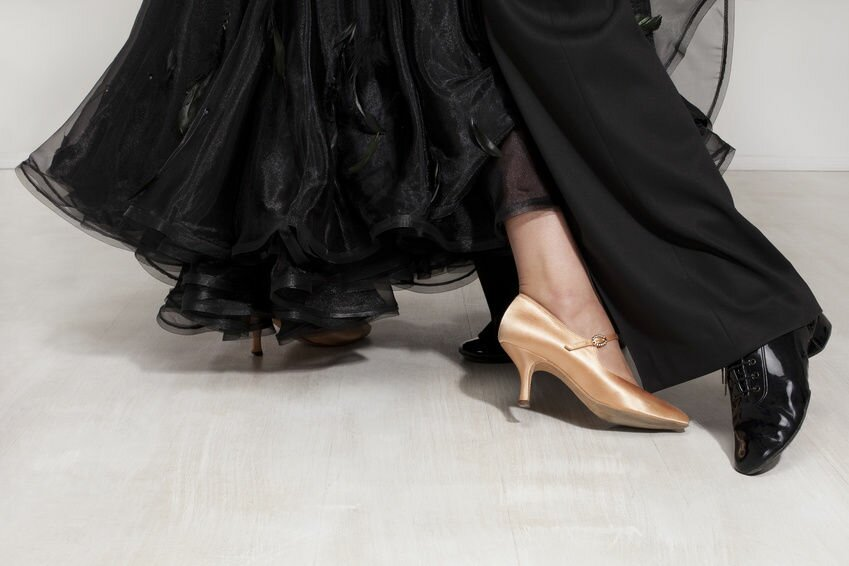

5 Common Footwork Mistakes 
29 March 2017
Is the footwork Heel Toe or just Toe? Maybe it's Flat, or is it Toe Heel Toe? Footwork typically relates to the functionality of the step being danced, but that isn't always the case, and the more you dance, the more you will come across strange footwork everywhere you look. This article will bring up some of these instances, and help explain why it is the way it is, or if there isn't really a reason at all, as well as going over some interesting cases where you can choose what footwork you want to dance.
Basic Footwork
Below is a list of the most fundamental types of footwork, as well as a description of what it means and when to use it.
| Footwork | Abbrev. | Description |
| Heel Toe | HT | A step that starts on the heel and rolls through the foot until it rolls off the toe at the end. This footwork is the normal footwork used when walking in every day life, and is used in forward steps when you commence the step already low, as it would be hard to take a step any other way while deep in the knees. |
| Toe Heel | TH | A step that starts on the toe and rolls through the foot until it rolls off the heel at the end. This is the natural opposite of the HT footwork, and is used in similar circumstances, but when moving backward. Another instance it is used is when cushioning a lowering action, when changing from a high position to a low one, such as in step 4 of the Waltz Chasse from PP. This occurs both forward and backward, as this allows the ankle to absorb the shock. |
| Toe | T | A step that is taken on the ball of the foot, where the heel never touches the floor. This footwork is used to achieve maximum Rise, as in step 2 of the Waltz Natural Turn, or when moving with a quick, light feeling, as in the Foxtrot Basic Weave. |
| Heel Toe Heel | HTH | A step that starts on the heel and rolls to the ball of the foot, then rolls back off the heel at the end. This is typically used only in natural pivotting actions, such as the Lady's fourth step in the Quickstep Natural Pivot Turn, where the dancer starts in a low position and takes a step forward from the heel, then needs to move weight over the ball of the foot to allow for the foot to pivot freely, and ends by rolling weight back off the heel. |
| Toe Heel Toe | THT | A step that starts on the toe, where the heel then lowers to the floor briefly, before it lifts off the floor, ending with a pushing off the toe in the end. There are two instances where this footwork is used: 1) When starting as a back step that would normally be TH, and turning to end as a forward step that would normally be HT. Such is the Man's fourth step in the Waltz Natural Spin Turn, where he takes the step backward and pivots over the ball of the foot, with the heel in light contact with the floor, then rolls forward off the toe at the end. This also happens on the Man's first step of the Foxtrot Feather Finish. 2) When a dancer moving backward takes a strong leading step, but then rises immediately, necessitating the lifting of the heel, as in the Man's first step of the Back Lock (discussed below). |
Tango is different from the other dances in terms of mechanics (read more here), and so the technique is different as well. The following footwork is found in Tango.
| Footwork | Abbrev. | Description |
| Heel | H | Sometimes called Heel Flat. A step is taken from the heel of the foot, but the rest of the foot is immediately lowered to a flat position, unlike the smooth rolling action used in a HT step. This is the basic way to walk forward in Tango. |
| Ball Heel | BH | A step that starts on the ball of the foot (not the toe), and rolls through the foot until it rolls off the heel at the end. This is the natural opposite of the H footwork, and is used when walking backward in Tango. |
| Whole Foot | WF | A step that is taken by placing the entire foot down onto the floor at once, as in the last step of the Closed Promenade. |
| Inside Edge | IE | A step taken on the inside edge of either the WF (IE of foot) or of the ball, lowering the heel afterward (IE of BH), as in the third step of the Closed Promenade. |
Finally, it should be noted that some think of the footwork for Viennese Waltz more as Heel Ball, Ball Heel, and Ball, rather than Heel Toe, Toe Heel, and Toe, as the speed of the music prevents full articulation of the toes.
Footwork You Might not be Dancing "Correctly"
1. Quickstep: Rumba Cross (Man)
The Rumba Cross is a Gold figure, which uses a sort of Forward Lock for the Man, which curves around the Lady to the Right and ends with a Natural Pivot. Because of its extreme shape and rotation, it is a very competitive figure, and is used by top professionals, but many Gold dancers don't realize that the Man's first step should be taken HT. Typically the first step of a Lock is taken on a toe, with the second step crossing behind the first, so it seems strange that a Lock should be commenced with the heel. The reason it is danced this way is because of the extreme shape of the Rumba Cross. The figure begins low and shaped strongly to the Man's left, and so the step is taken from the heel. Only after the step is taken does the Man begin to rise and shape to the right, causing him to roll from the heel to the toe.
2. Tango: Reverse Turns (Lady)
During the Open Reverse Turn (PreBronze) and the Basic Reverse Turn (Gold), the Lady's second step should be WF, but some make the mistake of dancing it without lowering the heel at all. The reason may be because these Reverse Turns feel similar to Reverse Turns in Waltz or Viennese Waltz where the heel isn't lowered on the second step, due to the Rise. In Tango, however, there is no Rise and Fall, and placing the second step flat allows for a more stable base with less effort.
3. Tango: Progressive Link (Lady)
Categorized as PreBronze and with only two steps, the Progressive Link is one of the most fundamental and easiest figures in all of Tango. Perhaps it is due to learning this as beginners and never revisiting it that so many Ladies don't use the correct footwork here, or perhaps it is because the way it is often explained is stupidly complicated.
Although many Ladies take the first step as B, it should be BH. This means that the heel should lower to the ground. Now, typically in BH steps, you end up rolling off the heel, as when walking backward, however, that is not the case in this step. The footwork for the second step is BH of LF and IE of B of RF. This lengthy jumble of acronyms means that the second step should be taken Ball Heel, but you should also end with pressure in the inside edge of the Ball of your right foot, even though you aren't standing on it. What this entails is that after lowering the heel on your first step, you will roll back to the inside edge of the ball.
Okay, now that I think about it, I take back what I said about the Progressive Link being easy.
4. Foxtrot: Back Feather / Wave (Man)
When the Lady dances a Feather Step or Three Step, she steps TH on each step, but so many Men don't know what to do when they have to go backward in a similar manner, such as with the Back Feather and the Back Three Step found in the Reverse Wave. It is really simple: TH on 1, T on 2, and TH on 3. This reflects your Rise and Fall perfectly, and there is nothing weird about it, but so many Men dance the first step as T. If you haven't specifically worked on the footwork of these figures, you are probably doing it wrong.
5. Foxtrot: Bounce Fallaway and Weave Ending (Lady)
This figure is the reason correctly is in quotes at the head of this section. Technically, in the Bounce Fallaway, the Lady's first step should be THT. This is because of the Man's Rise, which the Lady should match. You can see Karen Hilton, former Professional Ballroom World Champion demonstrate the Lady's steps in slow motion in the video below, where her first step is clearly THT. If you continue to watch, however, you will see her demonstrate more quickly, both alone and with her partner, where she instead dances TH.
Although in theory the Lady should dance THT here, many great dancers don't, and if you can dance as beautifully as they do, nobody will care about your footwork either. So what does it really mean to be correct? Well, if the world champion dances it a certain way, can you really say it's wrong? And if the world champion is wrong, do you want to be right?
Optional Footwork
Did you know that you sometimes have the choice of what footwork to use? Different footwork can impact your movement, making it stronger or lighter by deciding to push from the toe or the heel.
1. Waltz: Whisk (Lady)
On the Lady's first step back in the Waltz Whisk, her footwork is typically written as TH, meaning that she should draw her heel back between steps 1 and 2, however, because of the Rise and to have a more beautiful foot line, many dancers feel they would prefer a lighter movement here, and instead draw the toe on the floor, essentially making that first step THT.
2. Waltz: Outside Change (Man)
Just like the Lady's Whisk, in the Outside Change, the footwork for the first step is typically written TH, meaning that he should draw his heel back between steps 1 and 2. For the exact same reasons listed above, the footwork THT is often used.
3. Waltz / Quickstep: Back Lock (Man)
The footwork on the Man's first step of the Back Lock can be either TH, drawing the heel back between the first and second steps, or THT, drawing the toe back. Here, it is more common for dancers to use the TH option, as it allows for a stronger push into the Back Lock, a figure whose sole purpose is to demonstrate strong linear movement. The Lady also dances the Back Lock, when the Man dances his Forward Lock, however, the Lady does not have the option to dance THT, and must dance TH. The reason is that there would be no indication to the Lady to dance a THT step, so she should assume it is a regular TH step, whereas the Man can dance THT if he wishes, as he is in control.
This applies to other figures that use a Back Lock technique, such as the V6.
4. Foxtrot: Weaves (Man)
There are three Weaves in Foxtrot, the Basic Weave, the Weave from PP, and the Natural Weave (the Natural Weave commenced in PP could be considered a fourth), and all of them have an optional footwork for the Man. Typically, the third step of the Basic Weave (4th step of the Weave from PP and Natural Weave) is taken only on the toe, as it is a light movement, however, the Man has the option to take that step TH in order to have "softer and more flowing movement." In this case, it becomes akin to step 3 of the Reverse Turn.